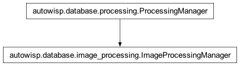

autowisp.database.image_processing module
Class Inheritance Diagram

Handle data processing DB interactions.
- class autowisp.database.image_processing.ExpressionMatcher(evaluated_expressions, ref_image_id, ref_channel, master_expression_ids, *, masters_only=False)[source]
Bases:
objectCompare condition expressions for an image/channel to a target.
Usually check if matched expressions and master expression values are identical, but also handles special case of calibrate step.
- class autowisp.database.image_processing.ImageProcessingManager(*args, **kwargs)[source]
Bases:
ProcessingManager
Read configuration and record processing progress in the database.
- Attrs:
See ProcessingManager.
- pending(dict): Indexed by step ID, and image type ID list of
(Image, channel name, status) tuples listing all the images of the given type that have not been processed by the currently selected version of the step in the key and their status if previous processing by that step was interrupted or None if not.
- _failed_dependencies(dict): Dictionary with keys (step, image_type)
that contains the list of images and channels that failed the given step.
- __call__(limit_to_steps=None, step_imtype_filter=None)[source]
Perform all the processing for the given steps (all if None).
- __init__(*args, **kwargs)[source]
Initialize self._failed_dependencies in addition to normali init.
- _bind_photref_for_pending(pending_images, step, db_session)[source]
Bind unbound fit_magnitudes pending images to photrefs.
For each pending image/channel without an ImageMasterSelection entry, assigns it to the best registered single_photref (condition expressions match + image center within max_photref_separation * photref diagonal_fov + most existing bindings). Returns only the images that have a valid binding; the rest are silently left pending until a suitable photref is registered via the BUI.
- _check_ready(step, image_type, db_session)[source]
Check if the given type of images is ready to process with given step.
- _clean_pending_per_dependencies(db_session, from_step_id=None, from_image_type_id=None)[source]
Remove pending images from steps if they failed a required step.
- _cleanup_interrupted(db_session)[source]
Cleanup previously interrupted processing for the current step.
- _end_processing(input_fname, status=1, final=True, diagnostics=None, photometry_diagnostics=None)[source]
Record that the current step has finished processing the given file.
- Parameters:
input_fname – The filename of the input (DR or FITS) that was processed.
status – The status code to record.
final – Whether this is the final status for this processing.
diagnostics – An optional list of
(name, value)tuples to record in theimage_diagnosticstable for each image/channel processed from input_fname, or a dict mapping channel names to such lists for per-channel diagnostics.photometry_diagnostics – An optional list of
(name, value, photometry_id)tuples to record in thephotometry_diagnosticstable for each image/channel processed from input_fname.
- Returns:
None
- _get_batch_config(batch, master_expression_values, step, db_session)[source]
Split given batch of images by configuration for given step.
The batch must already be split by all relevant condition expressions. Only splits batches by the best master for each image.
- Parameters:
batch ([Image, channel, status]) – List of database image instances and for channels which to find the configuration(s). The channel should be
Nonefor thecalibratestepmaster_expression_values (tuple) – The values the expressions required to select input masters or to guarantee a unique output master. Should be provided in consistent order for all batches processed by the same step.
step (Step) – The database step instance to configure.
db_session – Database session to use for queries.
- Returns:
- keys: guaranteed to match iff configuration, output master
conditions, and all best input master(s) match. In other words, if this function is called separately on multiple batches, it is safe to combine and process together those that end up with the same key.
- values:
dict: The configuration to use for the given (sub-)batch.
- [Image]: The (sub-)batch of images to process with given
configuration.
- Return type:
- _get_config_batches(pending_images, step_input_type, db_session)[source]
Return the batches of images to process with identical config.
- _get_interrupted(need_cleanup, db_session)[source]
Return list of interrupted files and configuration for cleanup.
- _get_photref_binding_counts(photref_ids, db_session)[source]
Return the number of images bound to each single photometric reference
- Returns:
- MasterFile.id: count of existing ImageMasterSelection rows per
photometric reference.
- Return type:
- _get_photref_diagnostics(photrefs_by_expr, db_session)[source]
Return {pf.id: {name: value}} of astrometry diagnostics per photref.
Each photref DR file’s FITS header contains RAWFNAME and CLRCHNL which identify the source Image row. ra_center, dec_center, and diagonal_fov are then read from ImageDiagnostics for that image/channel. Photrefs whose source image or diagnostics cannot be found are logged and omitted from the result.
- _get_photrefs_for_condition(photref_type, expressions, db_session)[source]
Return {expr_values: [MasterFile]} for all enabled single_photrefs.
Evaluates the condition expressions against each photref’s filename (same logic as _get_master) to group them by their expression values.
- _init_processed_ids(image, channels, step_input_type)[source]
Prepare to record processing of the given image by current step.
- _prepare_processing(step, image_type, limit_to_steps)[source]
Prepare for processing images of given type by a calibration step.
- _process_batch(batch, *, start_status, config, step_name, image_type_name)[source]
Run the current step for a batch of images given configuration.
- _progress_image_type(processing_progress, db_session)[source]
The image type is carried directly on an image progress row.
- _require_blocking_complete(query, step, image_type, db_session)[source]
Restrict query to images where allow_pending blocking steps are done.
For same-type dependencies marked allow_pending=True, inner-join the query so only images for which the blocking step has successfully completed are included. Images where the blocking step is pending or in-progress are silently deferred; images where it failed are handled separately by the failed_prereq subquery in set_pending.
- _run_step(batch, start_status, config, step_name)[source]
Invoke the step’s entry function for a batch of images.
- _save_diagnostics(finished_id, diagnostics, db_session)[source]
Save diagnostic values for a single image/channel.
- Parameters:
finished_id (dict) – Must contain
image_idandchannelkeys identifying the processed image and channel.diagnostics – A list of
(name, value)tuples where name must match aDiagnosticTyperow.db_session – Active database session.
- Raises:
ValueError – If a diagnostic name is not found in the
diagnostic_typetable.
- _save_photometry_diagnostics(finished_id, photometry_diagnostics, db_session)[source]
Save per-photometry diagnostic values for a single image/channel.
If a row already exists for the same image, channel, photometry, and diagnostic type, its value is updated (this supports iterative steps like magnitude fitting).
- Parameters:
finished_id (dict) – Must contain
image_idandchannelkeys identifying the processed image and channel.photometry_diagnostics – A list of
(name, value, photometry_id)tuples where name must match aDiagnosticTyperow.db_session – Active database session.
- Raises:
ValueError – If a diagnostic name is not found in the
diagnostic_typetable.
- _select_photref_for_image(image, channel, photref_type, expressions, photrefs_by_expr, photref_diagnostics, binding_counts, max_sep, db_session)[source]
Pick and record the best photref binding for one image/channel.
Returns True if bound (either pre-existing or newly written), False if no suitable photref is found. The distance threshold is max_sep * diagonal_fov of the photref.
- _set_calibration_config(config, first_image)[source]
Retrun the specially formatted argument for the calibration step.
- _split_by_master(batch, input_master_type)[source]
Split the given list of images by the best master of given type.
- _start_processing(input_fname, status=0)[source]
Mark in the database that processing the given file has begun.
- Parameters:
input_fname – The filename of the input (DR or FITS) that is about to begin processing.
- Returns:
None
- _start_step(step, image_type, db_session)[source]
Record the start of a processing step and return the images to process.
- Parameters:
- Returns:
The list of images and channels to process.
- str:
The type of input expected by the current step.
- Return type:
- get_step_input(image, channel_name, step_input_type)[source]
Return the name of the file required by the current step.
- group_pending_by_conditions(pending_images, db_session, *, match_observing_session=False, step_id=None, masters_only=False)[source]
Group pendig_images by condition expression values.
- Parameters:
pending_images ([Image, str]) – A list of the images (instance of Image DB class) and channels to group.
db_session – Database session to use for querries.
match_observing_session – Whether each group of images needs to be from the same observing session.
step_id (int) – The ID of the step for which to group the pending images. If not specified, defaults to the current step.
masters_only – If True, grouping is done only by the values expressions required to determine the input or output masters for the current step.
- Returns:
Each entry is contains a list of the image/channel combinations matching a unique set of conditions and the second entry is the master expression values for all images in the list.
- Return type:
- set_pending(db_session, steps_imtypes=None, invert=False)[source]
Set the unprocessed images and channels split by step and image type.
Set the self.pending attribute to a dictionary with format
{(step.id, image_type.id): (Image, str)}, containing the images and channels of the specified type for which the specified step has not applied with the current configuration.- Parameters:
db_session (Session) – The database session to use.
steps_imtypes (Step, ImageType) – The step image type combinations to determine pending images for. If unspecified, the full processing sequence defined in the database is used.
invert (bool) – If True, returns successfully completed (not failed) instead of pending.
- Returns:
None
- exception autowisp.database.image_processing.NoMasterError(message: str, *, related_files: Sequence[RelatedFile] = (), pipeline_run: FrozenRow | None = None, crashed: datetime | None = None, subprocess_id: int | None = None, user_message: str | None = None, details: dict | None = None)[source]
Bases:
MasterSelectionErrorRaised when no suitable master can be found for a batch of frames.
- autowisp.database.image_processing.get_master_expression_ids(step_id, image_type_id, db_session)[source]
List all condition expression IDs determining input or output masters.
- Parameters:
- Returns:
The combined expression IDs reqired to determine which required masters can be used for the given step or which masters will be created by it.
- Return type:
[int]